多态
方法或对象具有多种形态，多态建立在封装和继承基础之上。
方法的多态：重写和重载就体现多态。
对象的多态：
一个对象的编译类型和运行类型可以不一致。
编译类型在定义对象时，就确定了，不能改变。
运行类型是可以变化的。
编译类型看 = 左边，运行类型看 = 右边。
1 2 Animal animal = new Dog(); animal = new Cat();
向上转型：父类引用指向子类对象
可以调用父类中的所有成员【需遵守访问权限】
不能调用子类的特有成员【因为在编译阶段，能调用哪些由编译类型决定】
最终运行效果看子类的具体实现【调用方法时，先从运行类型中寻找，然后逐级向上查找。==属性没有重写，属性的值看编译类型==】
向下转型：将父类引用强转为子类对象
只能强转父类引用，不能强转父类对象
要求父类的引用必须指向的是当前目标类型的对象
向下转型后，可以调用子类类型中的特有成员
动态绑定机制
当调用对象方法时，该方法会和该对象的==运行类型==绑定。
当调用对象属性时，没有动态绑定机制，哪里声明哪里使用。
1 2 3 4 5 6 7 8 9 10 11 12 13 14 15 class A public int i = 10 ; public int sum () return getI() + 10 ; } public int sum1 () return i + 10 ; } public int getI () return i; } }
1 2 3 4 5 6 7 8 9 10 11 12 13 14 15 16 class B extends A public int i = 20 ; public int getI () return i; } }
1 2 3 4 5 6 7 8 9 10 11 12 13 14 15 16 public class Main public static void main (String args[]) A a = new B(); System.out.println(a.sum()); System.out.println(a.sum1()); } }
多态数组
数组定义类型为父类类型，保存的元素类型为子类类型。
1 2 3 4 5 6 7 8 9 10 11 12 13 14 15 16 17 18 19 20 21 22 23 24 25 26 27 public static void main (String args[]) Person[] persons = new Person[5 ]; persons[0 ] = new Person("张三" , 20 ); persons[1 ] = new Student("小红" , 20 , 61 ); persons[2 ] = new Student("小明" , 21 , 59 ); persons[3 ] = new Teacher("王刚" , 43 , 1000.5 ); persons[4 ] = new Teacher("刘兰" , 37 , 1550.0 ); for (Person person : persons) { person.say(); if (person instanceof Student) { (Student)person.study(); } if (person instanceof Teacher) { (Student)person.teach(); } } }
多态参数
方法定义的形参类型为父类类型，实参类型允许为子类类型。
1 2 3 4 5 6 7 8 9 10 11 12 13 14 15 16 public String getInfo (Person person) if (person instanceof Student) { return person.getName + "获得成绩：" + (Student) person.getScore(); } if (person instanceof Teacher) { return person.getName + "获得薪水：" + (Teacher) person.getSalary(); } } public static void main (String args[]) Student student = new Student("小红" , 20 , 61 ); getInfo(student); Teacher teacher = new Teacher("刘兰" , 37 , 1550.0 ); getInfo(teacher); }
instanceof
语法：对象名 instanceof 类名
判断==对象的运行类型==是否为==XX类型==或==XX类型的子类型==。
transient 关键字
transient 只能修饰成员变量，不能修饰类和方法
本地变量不能被 transient 修饰，如果修饰的为用户自定义类变量，则该类需要实现 Serializable 接口
transient 变量不参与序列化，序列化后无法通过反序列化进行访问
使用场景：
某属性值可以通过其他属性值推导出来，则该属性不需要序列化
安全性信息，例如：密码，一般情况下不能离开JVM，不能被序列化
final修饰符
修饰范围
作用
类
不能被继承
属性
不能被修改
方法
不能被重写
局部变量
不能被修改，声明变量时必须初始化
对象
对象的属性值可以修改，但是对象的地址不能被修改s1.name = “王五”; // √
注：
final不能修饰构造方法。
final和static搭配使用，效率更高，不会导致类加载，底层编译器做了优化。
1 2 3 4 5 6 7 8 9 10 11 12 13 14 15 16 public class Main public static void main (String[] args) System.out.println(Cat.name); System.out.println(); System.out.println(Cat.desc); } } class Cat public static final String name = "汤姆猫" ; public static String desc = "我是一只猫" ; static { System.out.println("类被加载" ); } }
enum枚举
1 2 3 4 5 6 7 8 9 10 11 12 13 14 15 16 17 18 19 20 21 22 23 24 25 26 27 28 29 30 public class Main public static void main (String[] args) for (Week week : Week.values()) { System.out.println(week); } } } enum Week MONDAY("星期一" ), TUESDAY("星期二" ), WEDNESDAY("星期三" ), THURSDAY("星期四" ), FRIDAY("星期五" ), SATURDAY("星期六" ), SUNDAY("星期日" ); private final String name; Week(String name) { this .name = name; } @Override public String toString () return name; } }
Exception异常
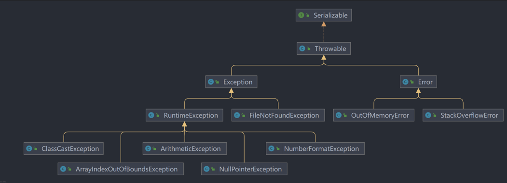
Exception分为RuntimeException【运行时异常】和【编译时异常】
编译时异常，必须通过try-catch或throws处理；
运行时异常，如果不做处理，会默认使用throws方式处理，最终交给JVM处理，即控制台打印异常信息并中断应用程序；
ClassCastException：类型转换异常
常见编译异常：
SQLException：数据库操作异常
IOException：文件操作异常
FIleNotFoundException：文件不存在市场
ClassNotFoundException：加载类时，类不存在
EOFException：操作文件，到文件末尾，发生异常
IllegalArguementException：参数异常
自定义异常：
继承Exception【编译异常】或RuntimeException【一般情况下，继承运行时异常。好处：可以使用默认处理机制】；
1 2 3 4 5 6 7 8 9 10 11 12 13 14 15 public class Test public static void main (String[] args) int age = 180 ; if (!(age >= 0 && age <= 120 )) { throw new AgeException("年龄有误！" ); } System.out.println("正确！" ); } } class AgeException extends RuntimeException public AgeException (String message) super (message); } }
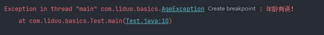
String类
创建String对象
方式一：直接赋值
方式二：调用构造方法
1 String s = new String("hello" );
两种创建 String 对象的区别：
方式一：先从常量池查找是否有 “hello” 的数据空间，如果有，直接指向；否则，重新创建，然后指向。s 最终指向的是常量池的空间地址。
方式二：先在堆中创建空间，里面维护了 value 属性，指向常量池的 “hello” 空间。如果常量池中没有 “hello”，重新创建，如果有，直接通过 value 指向。最终指向的是堆中的空间地址。
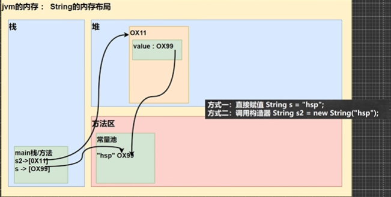
intern() 方法
返回字符串的常量池地址，如果常量池没有该字符串，则创建字符串并返回常量池地址。
1 2 3 4 5 6 String s1 = "hello" ; String s2 = new String("hello" ); s1 == s2; s1.intern() == s2.intern(); s2 = s2.intern();
String特性
1 2 String s = "abc" ; s = "xyz" ;
1 String s = "abc" + "def" ;
1 2 3 4 5 6 7 8 9 10 11 12 String a = "hello" ; String b = "abc" ; String c = a + b; c == "helloabc" ;
StringBuffer
StringBuffer 对象继承 AbstractStringBuilder 类，字符串内容存储在 AbstractStringBuilder 类的 char[] value 中。
StringBuffer 对象创建时，char[] value 的最小空间为 16.
StringBuffer 对象指向堆空间，字符序列为可变序列，改变字符串内容，不改变地址【注：若改变后的长度太大，则会改变地址】。
StringBuffer -> String
1 2 3 4 5 StringBuffer stringBuffer = new StringBuffer("hello" ); String s1 = stringBuffer.toString(); String s2 = new String(stringBuffer);
String -> StringBuffer
1 2 3 4 5 6 String s = "hello" ; StringBuffer sb1 = new StringBuffer(s); StringBuffer sb2 = new StringBuffer(); sb2.append(s);
StringBuilder
StringBuffer的简易版，线程不安全，主要用于单线程。
三者对比
类名
区别
String
不可变字符序列，值存储在字符串常量池。
StringBuffer
可变字符序列，值存储在堆中。
StringBuilder
可变字符序列，值存储在堆中，主要用于单线程。
Arrays 类
sort()
1 2 3 4 5 6 7 8 9 Integer[] arr = {-1 , 1 , 0 , 5 , 3 , 8 }; Arrays.sort(arr, new Comparator<Integer>() { @Override public int compare (Integer o1, Integer o2) return o1 - o2; } });
1 2 3 4 5 6 7 8 9 10 11 12 13 14 15 16 17 18 19 20 21 22 23 24 25 26 public class ArraysSortCustom public static void main (String[] args) int [] arr = {-1 , 1 , 0 , 5 , 3 , 8 }; bubble(arr, new Comparator() { @Override public int compare (Object o1, Object o2) return (Integer) o2 - (Integer) o1; } }); System.out.println(Arrays.toString(arr)); } public static void bubble (int [] arr, Comparator<Integer> c) int temp; for (int i = 0 ; i < arr.length - 1 ; i++) { for (int j = 0 ; j < arr.length - i - 1 ; j++) { if (c.compare(arr[j], arr[j + 1 ]) > 0 ) { temp = arr[j]; arr[j] = arr[j + 1 ]; arr[j + 1 ] = temp; } } } } }
binarySearch()
二分查找，使用前提：数组有序
如果找到 key，返回 key 的下标
如果没找到 key， 返回 - ( low - 1 )
1 2 3 4 5 6 public static void main (String[] args) int [] arr = {-1 , 0 , 1 , 3 , 5 , 8 }; System.out.println(Arrays.binarySearch(arr, 6 )); }
1 2 3 4 5 6 7 8 9 10 11 12 13 14 15 16 17 18 19 private static int binarySearch0 (int [] a, int fromIndex, int toIndex, int key) int low = fromIndex; int high = toIndex - 1 ; while (low <= high) { int mid = (low + high) >>> 1 ; int midVal = a[mid]; if (midVal < key) low = mid + 1 ; else if (midVal > key) high = mid - 1 ; else return mid; } return -(low + 1 ); }
copyOf()
从数组 arr 中，复制 len 个元素到新数组 newArr
如果 len > arr.length，则 newArr 后续空间为 null
如果 len < 0，则抛出异常 NegativeArraySizeException
该方法底层使用System.arraycopy()
1 2 3 int [] arr = {-1 , 0 , 1 , 3 , 5 , 8 };int [] newArr = Arrays.copyOf(arr, 4 );
fill()
asList()
将 （1, 2, 3, 4）数据转成 List 集合
返回 asList 编译类型 List (接口)
asList 运行类型 java.util.Arrays#ArrayList，是 Arrays 类的静态内部类
1 2 3 4 5 private static class ArrayList <E > extends AbstractList <E > implements RandomAccess , java .io .Serializable { }
System类
arraycopy()：复制数组元素，比较适合底层调用，一般使用 Arrays.copyOf() 完成复制数组
1 2 3 4 5 6 7 8 9 10 int [] src={1 ,2 ,3 }int [] dest = new int [3 ];System.arraycopy(src, 0 , dest, 0 , 3 )
currentTimeMillens()：返回当前时间距离1970-1-1的毫秒数
gc()：运行垃圾回收机制 System.gc()
BigInteger
实例化：需要使用 “ ”
1 BigInteger bigInteger = new BigInteger("1599999999999999999999999999999" );
常用方法
1 2 3 4 5 6 BigInteger add (BigInteger) BigInteger subtract (BigInteger) BigInteger multiply (BigInteger) BigInteger divide (BigInteger) BigInteger gcd (BigInteger)
BigDecimal
高精度小数运算
1 2 3 4 BigDecimal num = new BigDecimal("10.0" ); System.out.println(num.divide(new BigDecimal("3.0" ), RoundingMode.CEILING));
RoundingMode 枚举类参数
1 2 3 4 5 6 7 8 9 UP DOWN CEILING FLOOR HALF_UP HALF_DOWN HALF_EVEN UNNECESSARY
File类
文件在程序中是以流的形式操作的。
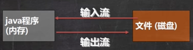
流：数据在数据源（文件）和程序（内存）之间经历的路径。
输入流：数据从数据源（文件）到程序（内存）的路径。
输出流：数据从程序（内存）到数据源（文件）的路径。
实例化
1 2 3 4 5 File file = new File(String pathname) File file = new File(File parent, String child) File file = new File(String parent, STring child) file.createNewFile()
常用方法
1 2 3 4 5 6 7 8 9 10 11 12 13 14 15 16 17 18 19 20 21 22 File file = new File("d:\\data.txt" ); System.out.println("file.getName() = " + file.getName()); System.out.println("file.getAbsolutePath() = " + file.getAbsolutePath()); System.out.println("file.getParent() = " + file.getParent()); System.out.println("file.getParentFile() = " + file.getParentFile()); System.out.println("file.length() = " + file.length()); System.out.println("file.exists() = " + file.exists()); System.out.println("file.isFile() = " + file.isFile()); System.out.println("file.isDirectory() = " + file.isDirectory()); System.out.println("file.getFreeSpace() = " + file.getFreeSpace()); System.out.println("file.getTotalSpace() = " + file.getTotalSpace()); System.out.println("file.getUsableSpace() = " + file.getUsableSpace()); System.out.println("file.canRead() = " + file.canRead()); System.out.println("file.canWrite() = " + file.canWrite()); System.out.println("file.canExecute() = " + file.canExecute()); if (file.delete()) { System.out.println("删除成功" ); } String dirPath = "d:\\myData\\data\\test" ; File file = new File(dirPath); System.out.println("file.mkdirs() = " + file.mkdirs());
I/O流
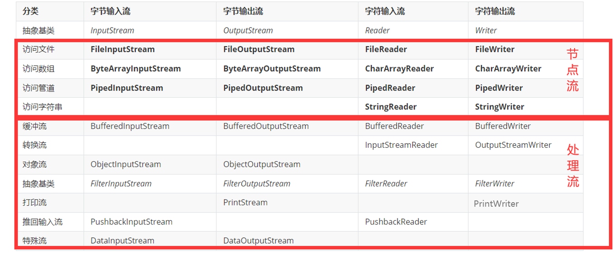
字节流
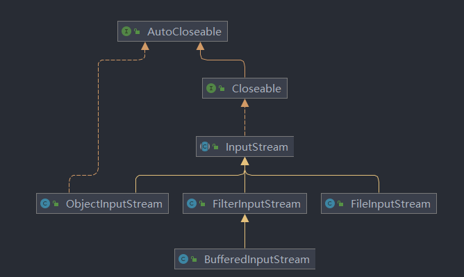
实例化对象：
1 2 3 4 5 6 7 String filePath = "d:\\data.txt" ; FileInputStream fileInputStream = new FileInputStream(filePath); File file = new File(filePath); FileInputStream fileInputStream = new FileInputStream(file);
常用方法：
1 2 3 4 5 fileInputStream.read() fileInputStream.read(byte [] b) fileInputStream.read(byte [] b, int off, int len)
示例代码：
1 2 3 4 5 6 7 8 9 10 11 12 13 14 15 16 17 18 19 20 21 22 23 24 public static void readFile02 () String filePath = "d:\\data.txt" ; byte [] b = new byte [8 ]; int len; FileInputStream fileInputStream = null ; try { fileInputStream = new FileInputStream(filePath); while ((len = fileInputStream.read(b)) != -1 ) { System.out.print(new String(b, 0 , len)); } } catch (IOException e) { e.printStackTrace(); } finally { try { assert fileInputStream != null ; fileInputStream.close(); } catch (IOException e) { e.printStackTrace(); } } }
1 2 public BufferedInputStream (InputStream in)
1 2 3 public ObjectInputStream (InputStream in)
OutputStream
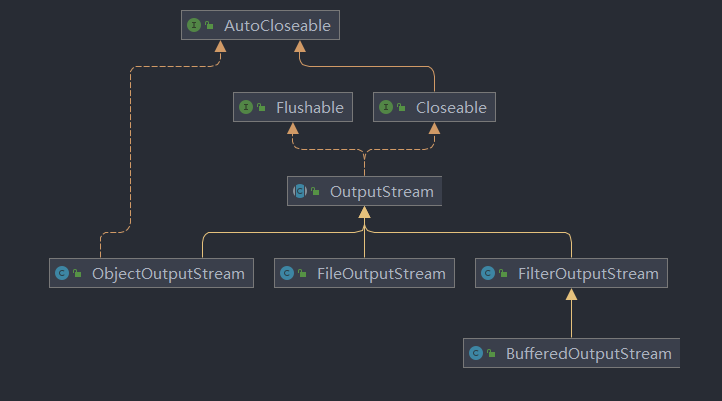
FileOutputStream
实例化对象
1 2 3 4 5 6 7 8 9 10 String filePath = "d:\\data.txt" ; File file = new File(filePath); FileOutputStream fileOutputStream = new FileOutputStream(filePath); FileOutputStream fileOutputStream = new FileOutputStream(file); FileOutputStream fileOutputStream = new FileOutputStream(filePath, ture); FileOutputStream fileOutputStream = new FileOutputStream(file, ture);
常用方法
1 2 3 4 5 6 7 8 9 10 11 fileOutputStream.write(122 ); fileOutputStream.write('z' ); String str = "hello, world" ; fileOutputStream.write(str.getBytes()); String str = "hello, world" ; fileOutputStream.write(str.getBytes(), 0 , 3 );
示例代码
1 2 3 4 5 6 7 8 9 10 11 12 13 14 15 16 17 18 public static void writeFile01 () String filePath = "d:\\data.txt" ; FileOutputStream fileOutputStream = null ; try { fileOutputStream = new FileOutputStream(filePath); String str = "hello, world" ; fileOutputStream.write(str.getBytes()); } catch (IOException e) { e.printStackTrace(); } finally { try { assert fileOutputStream != null ; fileOutputStream.close(); } catch (IOException e) { e.printStackTrace(); } } }
BufferedOutputStream
1 2 public BufferedOutputStream (OutputStream out)
ObjectOutputStream
1 2 3 public ObjectOutputStream (OutputStream out)
字符流
Reader
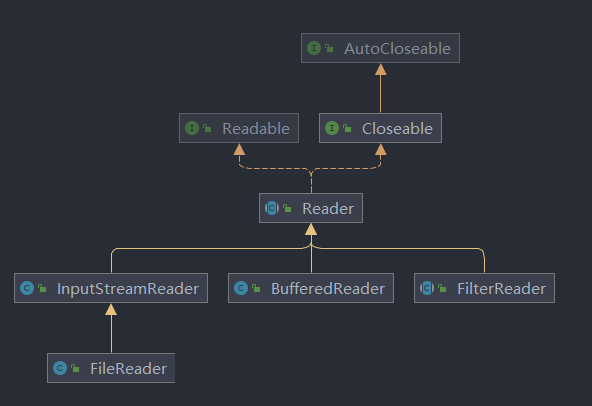
FileReader
1 2 3 4 5 6 7 8 1 ) new FileReader(File/String)2 ) read(); 3 ) read(char []) 1 ) new String(char []) 2 ) new String(char [], off, len)
示例代码
1 2 3 4 5 6 7 8 9 10 11 12 13 14 15 16 17 18 19 20 21 public static void fileReader () String filePath = "D:\\Java\\Java---从头来过\\JavaBasics\\src\\data.txt" ; FileReader fileReader = null ; char [] chars = new char [1024 ]; int len; try { fileReader = new FileReader(filePath); while ((len = fileReader.read(chars)) != -1 ) { System.out.println(new String(chars, 0 , len)); } } catch (IOException e) { e.printStackTrace(); } finally { try { assert fileReader != null ; fileReader.close(); } catch (IOException e) { e.printStackTrace(); } } }
BufferedReader
关闭时，只需要关闭包装流，底层会自动关闭包装的节点流。
示例代码
1 2 3 4 5 6 7 8 9 10 public static void bufferedReadFile () throws IOException BufferedReader bufferedReader = new BufferedReader(new FileReader(filePath)); String line; while ((line = bufferedReader.readLine()) != null ) { System.out.println(line); } bufferedReader.close(); }
Writer
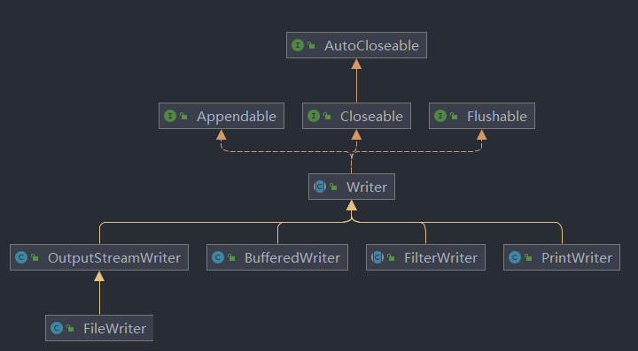
FileWriter
1 2 3 4 5 6 7 8 1 ) new FileWriter(File/String) 2 ) new FileWriter(File/String,true ) 3 ) write(int ) 4 ) write(char []) 5 ) write(char [],off,len) 6 ) write (string) 7 ) write(string,off,len)
➢注意:
示例代码：
1 2 3 4 5 6 7 8 9 10 11 12 13 14 15 16 17 18 public static void fileWriter () String filePath = "D:\\Java\\Java---从头来过\\JavaBasics\\src\\data.txt" ; FileWriter fileWriter = null ; try { fileWriter = new FileWriter(filePath); fileWriter.write("风雨之后， 定见彩虹" ); } catch (IOException e) { e.printStackTrace(); } finally { try { assert fileWriter != null ; fileWriter.close(); } catch (IOException e) { e.printStackTrace(); } } }
BufferedWriter
1 2 3 4 5 6 7 8 9 public static void bufferedWriterFile () throws IOException BufferedWriter bufferedWriter = new BufferedWriter(new FileWriter(filePath)); bufferedWriter.write("bufferedWriter Successful" ); bufferedWriter.newLine(); bufferedWriter.close(); }
序列化和反序列化
序列化：保存数据时，保存==数据的值==和==数据类型==。
反序列化：恢复数据时，恢复==数据的值==和==数据类型==。
需要让某个对象支持序列化机制，则其类必须实现 Serializable【推荐使用】 或 Externalizable【继承Serializable，该接口有两个方法需要实现，所以一般不使用】 接口。
注意事项和细节
序列化 和 反序列化 的==读写顺序要一致==
对象要支持 序列化 和 反序列化，其类要实现 Serializable 接口
序列化的类中建议添加 ==SerialVersionUID==，为了提高版本兼容性
序列化对象时，默认将其所有属性都进行序列化，除了 static【序列化保存的是对象状态，static 变量所属类，如果反序列化后 static 变量有值，则该值为当前 JVM 中对应的 static 变量的值】和 transient 属性
序列化对象时，要求 ==其所有属性的类型== 都实现 Serializable 接口
序列化具备可继承性，某类实现序列化，其子类也默认实现序列化
1 2 3 4 5 6 7 8 9 10 11 12 13 14 15 16 17 18 19 20 21 22 23 24 25 26 27 28 29 30 31 32 33 34 35 36 37 class Dog implements Serializable private String name; private int age; private static final long serialVersionUID = 1L ; public Dog (String name, int age) this .name = name; this .age = age; } @Override public String toString () return "Dog{" + "name='" + name + '\'' + ", age=" + age + '}' ; } public void setName (String name) this .name = name; } public void setAge (int age) this .age = age; } public String getName () return name; } public int getAge () return age; } }
1 2 3 4 5 6 7 8 9 10 11 12 13 14 15 16 17 18 19 20 21 ObjectInputStream ois = new ObjectInputStream(new FileInputStream(filePath)); System.out.println(ois.readInt()); System.out.println(ois.readBoolean()); System.out.println(ois.readUTF()); System.out.println(ois.readDouble()); System.out.println(ois.readChar()); try { Object object = ois.readObject(); System.out.println(object.getClass()); System.out.println(object); Dog dog = (Dog) object; System.out.println(dog.getName()); } catch (ClassNotFoundException e) { e.printStackTrace(); } ois.close();
ObjectOutputStream
1 2 3 4 5 6 7 8 9 10 11 12 ObjectOutputStream oos = new ObjectOutputStream(new FileOutputStream(filePath)); oos.writeInt(100 ); oos.writeBoolean(true ); oos.writeUTF("hello" ); oos.writeDouble(1.2 ); oos.writeChar('s' ); oos.writeObject(new Dog("小黄" , 7 )); oos.close();
标准输入输出流
PrintStream
文件拷贝实战
1 2 3 4 5 6 7 8 9 10 11 12 13 14 15 16 17 18 19 20 21 22 23 24 25 26 27 28 29 30 31 32 33 34 35 36 37 38 39 package com.liduo.IO;import java.io.*;public class FileCopy public static void main (String[] args) String scrFilepath = "D:\\Java\\Java---从头来过\\JavaBasics\\src\\img.png" ; String destFilepath = "D:\\Java\\Java---从头来过\\JavaBasics\\src\\res.png" ; byte [] b = new byte [1024 ]; int len; FileInputStream fileInputStream = null ; FileOutputStream fileOutputStream = null ; try { fileInputStream = new FileInputStream(scrFilepath); fileOutputStream = new FileOutputStream(destFilepath); while ((len = fileInputStream.read(b)) != -1 ) { fileOutputStream.write(b, 0 , len); } } catch (IOException e) { e.printStackTrace(); } finally { try { assert fileInputStream != null ; fileInputStream.close(); assert fileOutputStream != null ; fileOutputStream.close(); } catch (IOException e) { e.printStackTrace(); } } } }
Properties 类
对 .properties 配置文件进行操作的类，将配置文件中的信息以键值对的形式通过 Properties 类进行读取/写入操作。
1 2 3 4 5 6 7 8 9 10 11 12 13 14 15 16 void load (Reader / InputStream) void list (PrintStream / PrinWriter) String getProperty (String key) String getProperty (String key, String defaultValue) Object setProperty (String key, String value) void store (Writer / OutputStream, String comments)
示例代码
1 2 3 4 5 6 7 8 9 10 11 12 13 14 15 16 17 18 19 20 21 22 public class CodeQuestion static String filePath = "src\\sql.properties" ; public static void main (String[] args) throws IOException Properties properties = new Properties(); properties.load(new FileReader(filePath)); properties.list(System.out); System.out.println("密码 = " + properties.getProperty("password" )); properties.setProperty("port" , "3306" ); properties.store(new FileWriter(filePath), null ); } }
线程
线程由进程创建，是进程的一个实体。
单线程：同一时刻，只允许执行一个线程。
多线程：同一时刻，可以执行多个线程，比如：一个qq进程，可以同时打开多个聊天窗口。
并发：同一时刻，多个任务交替执行，造成一种“貌似同时”的错觉。==单核cpu实现的多任务就是并发==。
并行：同一时刻，多个任务同时执行。==多核cpu可以实现并行==。
多线程机制
java应用程序运行【进程】—> main 线程 —> 其它线程【 —> 其他线程 】。
主线程不会等其他线程结束后才结束。
所有线程结束后，进程才会结束。
创建线程
继承 Thread 类，重写 run 方法
==Thread 类实现了 Runnable 接口，Thread 的 run() 是重写了 Runnable 接口的 run()==
1 2 3 4 5 6 7 8 class MyThread extends Thread @Override public void run () for (int i = 0 ; i < 101 ; i = i + 2 ) { System.out.println("MyThread1.run == " + i); } } }
实现 Runnable 接口，重写 run 方法
java 单继承机制，如果某一个类已经有一个父类，就无法继承 Thread 类，可以实现 Runnable 接口
不能直接通过 start() 方法启动线程，需要通过 Thread 对象调用 start() 方法【==静态代理模式==】
实现 Runnable 接口方式更加适合多个线程共享一个资源的情况，并且避免了单继承的限制
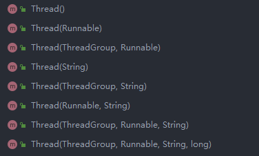
1 2 3 4 5 6 7 8 9 10 11 12 13 14 15 16 17 18 19 public class Main public static void main (String[]args) throws InterruptedException RunnableTest t = new RunnableTest(); Thread thread1 = new Thread(t); Thread thread2 = new Thread(t); thread1.start(); thread2.start(); } } class RunnableTest implements Runnable @Override public void run () System.out.println(Thread.currentThread().getName()); } }
启动线程
调用 start() 方法，会执行本地方法 start0() 【查看 Thread类 源码可知，start0() 由 JVM 调用】，线程变为==可运行状态==，最终由 CPU 统一调度。
run() 方法是一个普通的方法，没有真正启动一个线程，如果直接调用，会先执行 run() 的内容，再向下执行。
1 2 3 4 5 6 7 8 9 10 11 12 13 public class TestThread public static void main (String[]args) throws InterruptedException MyThread myThread = new MyThread(); myThread.start(); for (int i = 0 ; i < 60 ; i++) { System.out.println("主线程 " + i); Thread.sleep(500 ); } } }
终止线程
当线程完成任务后，自动退出。
通过使用变量来控制 run() 方法退出，即通知方式。
常用方法
1 2 3 4 5 6 7 8 9 10 11 12 13 14 15 16 17 18 void setName (String) String getName () void run () void start () void interrupt () void setPriority (int ) int getPriority () void yield () void join () void setDaemon (boolean ) boolean isDaemon () void sleep () void currentThread ()
用户线程和守护线程
用户线程：也叫工作线程，当新成的任务执行完或以通知方式结束。
守护线程：一般为用户线程服务，当所有用户线程结束，守护线程自动结束。
常见的守护线程：垃圾回收机制
1 2 3 4 Thread t = new Thread(); t.setDaem(ture); t.start();
生命周期
线程状态【6 或 7 种状态】
1 2 3 4 5 6 7 8 9 10 11 12 13 14 public enum State NEW, RUNNABLE, BLOCKED, WAITING, TIMED_WAITING, TERMINATED; }
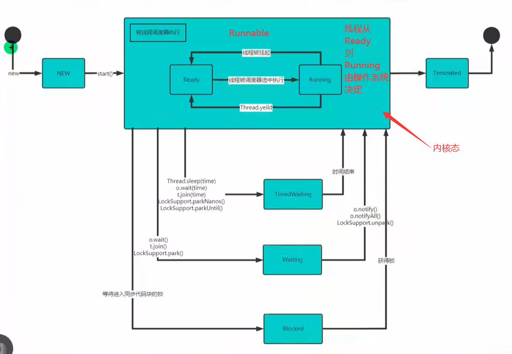
1 2 3 4 5 6 7 8 9 10 11 12 13 14 15 16 17 18 19 20 21 22 23 24 25 26 27 28 29 30 31 32 33 34 public class ThreadState public static void main (String[] args) throws InterruptedException Thread thread = new Thread(new T()); System.out.println(thread.getName() + "当前状态：" + thread.getState()); thread.start(); while (thread.getState() != Thread.State.TERMINATED) { System.out.println(thread.getName() + "当前状态：" + thread.getState()); Thread.sleep(500 ); } System.out.println(thread.getName() + "当前状态：" + thread.getState()); } } class T implements Runnable @Override public void run () while (true ) { for (int i = 0 ; i < 3 ; i++) { System.out.println("hi " + i); try { Thread.sleep(1000 ); } catch (InterruptedException e) { e.printStackTrace(); } } break ; } } }
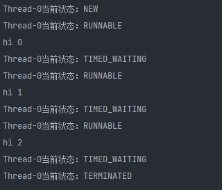
线程同步机制
在多线程编程中，==线程同步机制==保证一些敏感数据，==在任何同一时刻，最多只有一个线程访问==，以保证数据的完整性。
线程同步：即当有一个线程在对内存进行操作时，其它线程都不可以对这个内存地址进行操作，直到该线程完成操作，其它线程才能对该内存地址进行操作。
同步具体实现—synchronized
1 2 3 4 public synchronized void m (String name) }
1 2 3 4 5 6 7 8 9 10 11 12 13 14 15 16 17 18 19 20 21 22 23 24 25 26 27 28 29 30 31 32 33 34 35 36 37 38 39 40 41 package thread.ticket;public class SellTicket public static void main (String[] args) SellTicket01 sellTicket01 = new SellTicket01(); new Thread(sellTicket01, "窗口一" ).start(); new Thread(sellTicket01, "窗口二" ).start(); new Thread(sellTicket01, "窗口三" ).start(); } } class SellTicket01 implements Runnable private static int sellCount = 30 ; private boolean loop = true ; @Override public void run () while (loop) { sell(); } } public synchronized void sell () if (sellCount <= 0 ) { System.out.println("票已售空..." ); loop = false ; return ; } try { Thread.sleep(500 ); } catch (InterruptedException e) { e.printStackTrace(); } System.out.println(Thread.currentThread().getName() + "出售一张票，剩余 " + (--sellCount) + " 张票" ); } }
互斥锁
对象互斥锁，保证共享数据操作的完整性。
每个对象都有一个“互斥锁”的标记，这个标记用来保证在任一时刻，只能有一个线程访问该对象。
synchronized 与对象的互斥锁联系。修饰对象时，表明该对象在任一时刻只能有一个线程访问。
同步的局限性：导致程序的执行效率降低。
同步方法（非 static）的锁可以是 this，也可以是其他对象（要求是==同一对象==）。
1 2 3 4 5 6 7 8 9 10 11 12 13 14 15 16 public void sell () synchronized (this ) { if (sellCount <= 0 ) { System.out.println("票已售空..." ); loop = false ; return ; } try { Thread.sleep(500 ); } catch (InterruptedException e) { e.printStackTrace(); } System.out.println(Thread.currentThread().getName() + "出售一张票，剩余 " + (--sellCount) + " 张票" ); } }
同步方法（static）的锁为当前类本身。
1 2 3 4 5 6 7 8 9 10 11 class Test public synchronized static void m1 () } public static void m2 () synchronized (Test.class) { } } }
线程死锁
多个线程占用了对方的锁资源，都不相让，导致死锁。
1 2 3 4 5 6 7 8 9 10 11 12 13 14 15 16 17 18 19 20 21 22 23 24 25 26 27 28 29 30 31 32 33 34 35 36 37 public class DeadLockDemo public static void main (String[] args) LockThread lockThread1 = new LockThread(true ); LockThread lockThread2 = new LockThread(false ); lockThread1.start(); lockThread2.start(); } } class LockThread extends Thread static final Object o1 = new Object(); static final Object o2 = new Object(); boolean flag; public LockThread (boolean flag) this .flag = flag; } @Override public void run () if (flag) { synchronized (o1) { System.out.println(getName() + " 获得 锁 o1" ); synchronized (o2) { System.out.println(getName() + " 获得 锁 o2" ); } } } else { synchronized (o2) { System.out.println(getName() + " 获得 锁 o2" ); synchronized (o1) { System.out.println(getName() + " 获得 锁 o1" ); } } } } }
释放锁
以下操作会释放锁：
当前线程的同步方法 / 代码块执行结束。
当前线程在同步方法 / 代码块中遇到break、return。
出现了未处理的 Error 或 Exception，导致异常结束。
执行了线程对象的 wait() 方法，当前线程暂停，并释放锁。
以下操作不会释放锁：
程序调用 Thread.sleep()、Thread.yield() 方法暂停当前线程的执行。
其它线程调用了该线程的 suspend() 方法将该线程挂起，该线程不会释放锁。
注：尽量避免使用 suspend() 和 resume() 控制线程，已不再推荐使用。
网络编程
两台设备之间通过网络实现数据传输。
网络通信：将数据通过网络从一台设备传输到另一台设备。
网络：两台或多台设备通过一定的物理设备【交换机、网关服务器、路由等】连接起来构成了网络。
局域网：覆盖范围最小，仅覆盖一个教室或机房。
城域网：覆盖范围较大，可以覆盖一个城市。
广域网：覆盖范围最大，可以覆盖全国，甚至全球。例：万维网
ip地址
用于唯一标识网络中的每台计算机 / 主机
查看 ip 地址：ipconfig
ip 地址（4字节32位）的表示形式（点分十进制）：0~255. 0~255. 0~255. 0~255.
ip 地址 = 网络地址 + 主机地址，例：192.168.16.69
IPV6（16字节128位，冒分16进制） 是互联网工程任务组设计的用于替代 IPV4 的下一代 IP 协议。
IPV4 表示的网络地址资源有限，无法适用于物联网时代多种设备连入互联网的需求。
IPV4
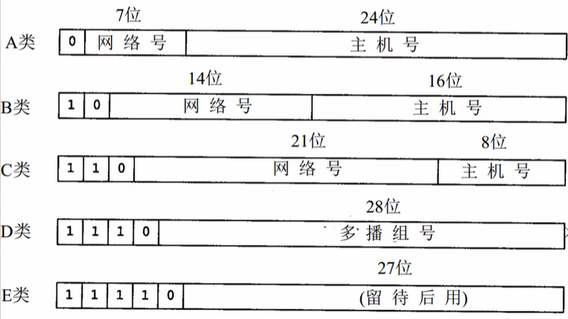
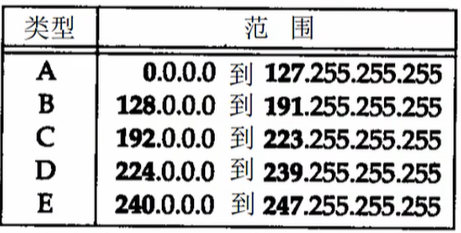
==特殊的 127.0.0.1 表示本机地址==
域名
例：www.baidu.com ，与 ip地址 映射。
端口
TCP/IP 协议
在网络编程中，数据的组织形式，就是协议。
TCP / IP (Transmission Control Protocol / Internet Protocol) ，==传输控制协议 / 因特网协议==，又叫网络通讯协议，是 Internet 最基本的协议、是 Internet 国际互联网络基础，是有网络层的 IP 协议和传输层的 TCP 协议组成。
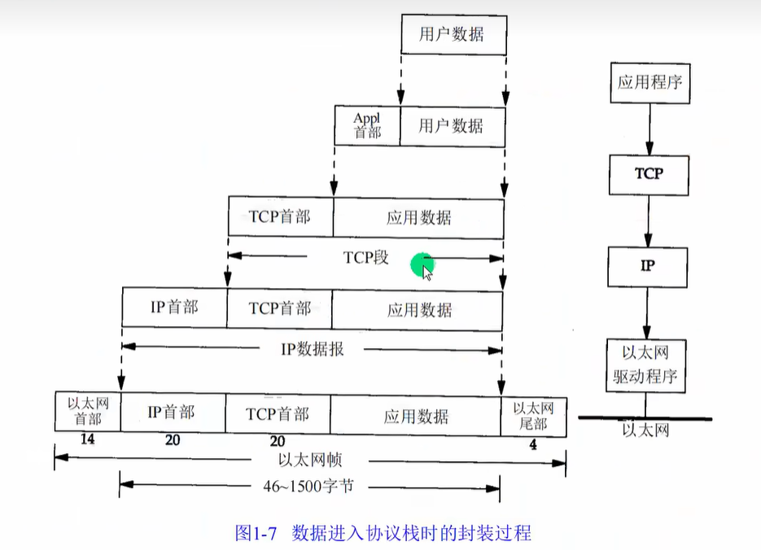
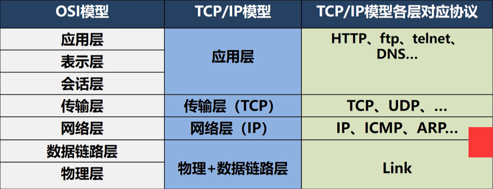
TCP/UDP
TCP 协议：传输控制协议
使用 TCP 协议前，须先建立 TCP 连接，行程传输数据通道。
传输前，采用“三次握手”方式，是==可靠的==。
TCP 协议进行通信的两个应用进程：客户端、服务端。
在连接中可进行大数据量的传输。
传输完毕，需释放已建立的连接，==效率低==。
UDP 协议：用户数据协议
将数据、源、目的封装成数据包，不需要建立连接。
每个数据包的大小限制在 64K 内，==不适合传输大量数据==。
因无需连接，==不可靠==。
发送数据结束时无须释放资源，速度快。
InetAddress类
1 2 3 4 5 6 7 8 9 10 11 12 13 14 15 16 17 18 19 public class API_ public static void main (String[] args) throws UnknownHostException InetAddress localHost = InetAddress.getLocalHost(); System.out.println(localHost); InetAddress host1 = InetAddress.getByName("LAPTOP-E82KRH0E" ); System.out.println(host1); InetAddress host2 = InetAddress.getByName("www.baidu.com" ); System.out.println(host2); System.out.println(host2.getHostName()); System.out.println(host2.getHostAddress()); } }
Socket
套接字（socket）开发网络应用程序被广泛采用，已成为一种标准。
通信的两端都要有 Socket ，是两台机器间通信的端点。
网络通信其实就是 Socket 间的通信。
Socket 允许程序把网络连接当成一个流，==数据在两个 Socket 间通过 IO 传输==。
一般主动发起通信的应用程序为客户端，等待通信请求的为服务端。
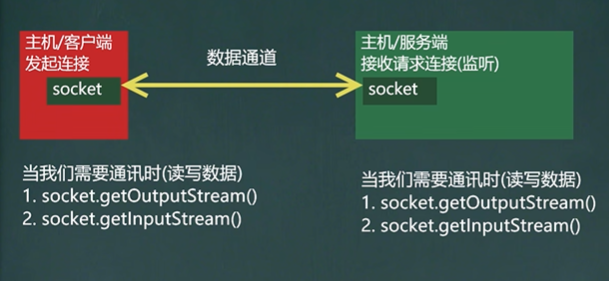
TCP 网络通信编程
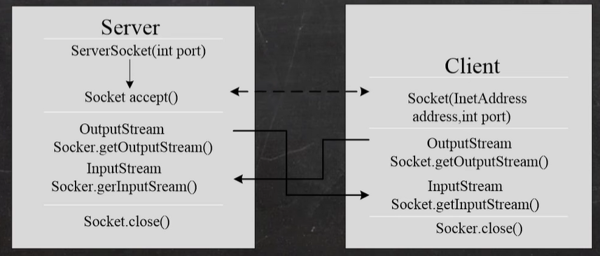
1 2 3 4 5 6 7 8 9 10 11 12 13 14 15 16 17 18 19 public class SocketTCPClient public static void main (String[] args) throws IOException Socket socket = new Socket(InetAddress.getLocalHost(), 9999 ); System.out.println("连接成功..." ); OutputStream serverOutputStream = socket.getOutputStream(); serverOutputStream.write("hello, server\nhello,world" .getBytes()); serverOutputStream.close(); socket.close(); System.out.println("客户端退出" ); } }
1 2 3 4 5 6 7 8 9 10 11 12 13 14 15 16 17 18 19 20 21 22 23 24 25 26 27 28 29 30 public class SocketTCPServer public static void main (String[] args) throws IOException ServerSocket serverSocket= new ServerSocket(9999 ); System.out.println("服务端启动，等待连接..." ); Socket socket = serverSocket.accept(); InputStream serverInputStream = socket.getInputStream(); BufferedReader bufferedReader = new BufferedReader(new InputStreamReader(serverInputStream)); String line; System.out.println("接收消息：" ); while ((line = bufferedReader.readLine()) != null ) { System.out.println(line); } serverInputStream.close(); bufferedReader.close(); socket.close(); } }
集合
List
ArrayList、LinkedList 和 Vector 区别
ArrayList 特点：
数组结构
有连续下标，增删操作慢，随机访问效率快
线程不安全
增长因子为 1.5 【加载因子0.75，当 元素个数 超过 容量 的 0.75 倍时，进行扩容，扩容为原来的 1.5 倍】
LinkedList 特点：
双向链表结构
增删快，有连续下标，随机访问效率低
线程不安全
增长因子为 2
Vector 特点：
数组实现
同 ArrayList，整体效率较低（线程同步影响，开销大）
线程安全
增长因子为 2
Set
Set 接口属于 Collection 的一个子接口.
元素无序，不可重复。
HashSet
按照 Hash 算法存储集合中的元素，具有很好地存取、查询、删除性能
不能保证元素的排列顺序
线程不安全
集合元素可以为 null
Map
双列数据，保存具有映射关系 key-value 的集合。
HashTable、HashMap
如果您喜欢此博客或发现它对您有用，则欢迎对此发表评论。 也欢迎您共享此博客，以便更多人可以参与。 如果博客中使用的图像侵犯了您的版权，请与作者联系以将其删除。 谢谢 ！